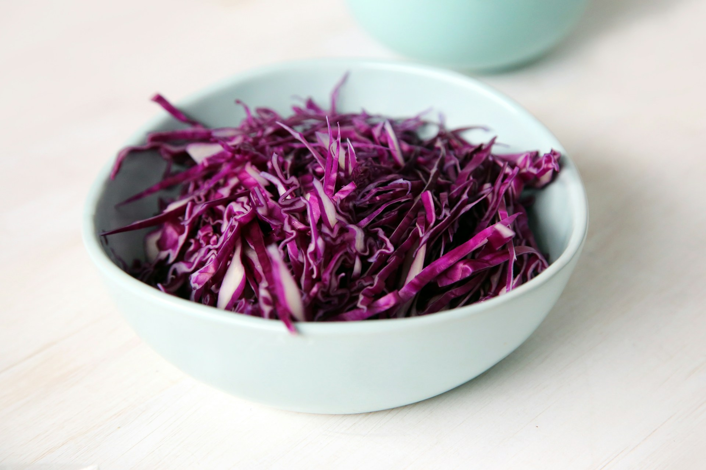

Southern Coleslaw

Description
This Southern coleslaw recipe has been passed down the generations and is great for any occasion.
It has the perfect balance of sweet and tangy. I've even been told it is reminiscent of KFC coleslaw. You be the judge!
Ingredients
- Vegetables: This slaw features cabbage, carrots, and onions.
- Sugar: White sugar adds sweetness, balancing the tart flavors of the other ingredients.
- Lemon Juice: Brighten things up with two tablespoons of lemon juice.
- Vinegar: You will need two tablespoons of white distilled vinegar.
- Seasonings: Simply season the southern coleslaw with salt and pepper.
Directions
-
Step 1
Mix the veggies in one bowl and make the dressing in another bowl.
-
Step 2
Pour the dressing over the veggies and mix thoroughly.
-
Step 3
Cover and refrigerate for at least two hours.